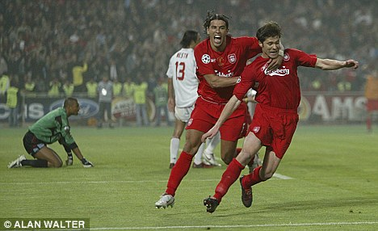

LFC Legends
Steven Gerrard
- Matches played 662
- Goals 168
- Assists 132
- 1x Footballer of the Year
- 1x Champions League winner
- 2x English FA Cup winner
-
3x English League Cup winner
-
1x Uefa Cup winner
-
2x Uefa Supercup winner
-
2x English Super Cup winner
-
1x Footballer of the Year
Robbie Fowler
- Matches played 344
- Goals 163
- Assists 13
- 1x English FA Cup winner
-
2x English League Cup winner
-
1x Uefa Cup winner
-
2x Uefa Supercup winner
Ian Rush
- Matches played 641
- Goals 289
- Assists 53
- 3x English FA Cup winner
-
5x English League Cup winner
-
1x Champions League winner
-
2x European Champion Clubs' Cup winner
- 5x English Champion
- 6x English Super Cup winner
- 1x Top scorer
- 1x Footballer of the Year
Jamie Carragher
- Matches played 734
- Goals 4
- Assists 11
- 1x Champions League winner
- 2x English FA Cup winner
-
3x English League Cup winner
-
1x Uefa Cup winner
-
2x Uefa Supercup winner
-
2x English Super Cup winner
Sami Hypia
- Matches played 635
- Goals 41
- Assists 13
- 9x Footballer of the Year
- 1x Champions League winner
- 2x English FA Cup winner
-
2x English League Cup winner
-
1x Uefa Cup winner
-
4x Uefa Supercup winner
-
3x English Super Cup winner
Sir Kenny Dalglish
- Matches played 442
- Goals 136
- Assists 54
- 9x Footballer of the Year
- 3x Champions clubs cup winner
- 2x English FA Cup winner
- 4x English League Cup winner
- 7x English Super Cup winner
- 1x Uefa Supercup winner
- 8x EnglishChampion

Xabi Alonso
- Matches played 690
- Goals 43
- Assists 58
- 1x Footballer of the Year
- 2x Champions league winner
- 1x English FA Cup winner
-
1x World Cup winner
-
2x European champion
-
1x Uefa Supercup winner
-
1x Spanish champion
- 2x Spanish cup winner
- 1x Spanish Super Cup winner
- 3x German Champion
- 1x German cup winner
- 1x German League Cup winner
- 1x German Super Cup winner
- 2x English Super Cup winner